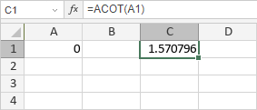

ACOT funkcija
Funkcija ACOT je jedna od matematičkih i trigonometrijskih funkcija. Koristi se za vraćanje glavne vrednosti arkuskotangensa, odnosno inverznog kotangensa broja. Vraćeni ugao se meri u radijanima u opsegu od 0 do Pi.
Sintaksa
ACOT(number)
Funkcija ACOT ima sledeći argument:
| Argument | Opis |
|---|---|
| number | Kotangens ugla koji želite da pronađete, numerička vrednost. |
Napomene
Kako primeniti funkciju ACOT.
Primeri
Slika ispod prikazuje rezultat koji vraća funkcija ACOT.
